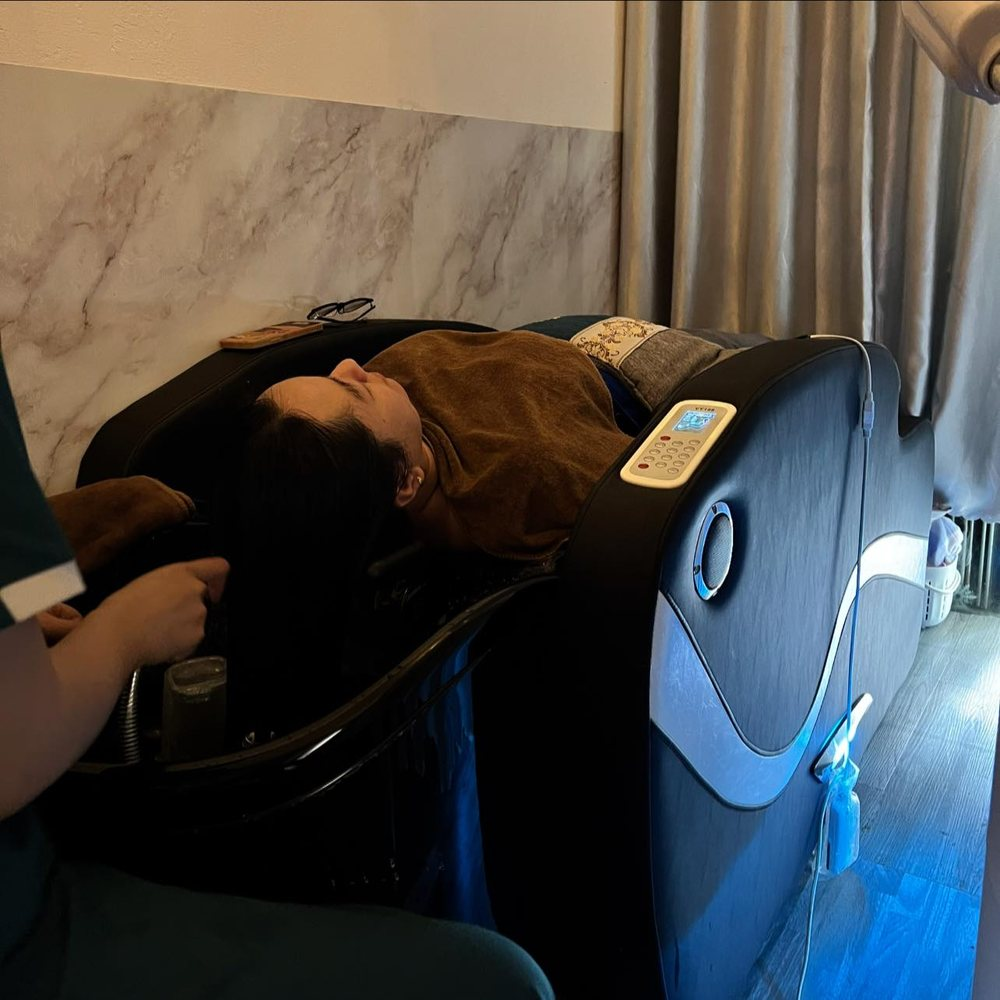

Gội đầu mỗi ngày mà chiều đã bết, vẫn gàu, vẫn ngứa? Vấn đề nhiều khi không nằm ở chuyện bạn gội ít, mà ở lớp cặn mà dầu gội thông thường không lấy đi được: bã nhờn tích tụ, tế bào chết, silicone từ dầu xả, keo xịt và bụi mịn ngoài đường.
Lớp cặn đó bám quanh chân tóc như một "lớp màng", khiến da đầu bí, dễ ngứa và là môi trường lý tưởng cho nấm gây gàu phát triển. Đó là lúc da đầu cần được detox.

Detox Da Đầu Là Gì?
Detox da đầu (thải độc da đầu) là quy trình làm sạch sâu, loại bỏ bã nhờn dư thừa, tế bào chết và cặn sản phẩm tạo kiểu bám ở chân tóc mà gội thường không xử lý hết. Một liệu trình detox chuẩn thường gồm ba lớp việc:
- Làm mềm và mở lỗ chân lông bằng hơi ấm hoặc khăn nóng, giúp cặn bẩn dễ bong ra.
- Tẩy tế bào chết da đầu bằng sản phẩm chuyên dụng và lực massage vừa phải.
- Cân bằng và phục hồi: bổ sung dưỡng chất cho nang tóc sau khi da đầu đã "thông thoáng".
Nói đơn giản: gội đầu là quét nhà, còn detox da đầu là tổng vệ sinh định kỳ.
6 Dấu Hiệu Da Đầu Đang "Quá Tải", Cần Detox
- Gội sáng, chiều đã bết: tuyến dầu tiết bù vì da đầu bị bí.
- Gàu quay lại dù đã đổi nhiều loại dầu gội trị gàu.
- Ngứa sau 1–2 ngày gội, càng gãi càng ngứa.
- Da đầu có mùi dù vừa gội hôm qua.
- Chân tóc xẹp, thiếu độ phồng, tóc nhìn mỏng hơn thực tế.
- Hay nổi mụn nhỏ trên da đầu hoặc thấy rụng tóc nhiều hơn bình thường.
Có từ 2 dấu hiệu trở lên? Rất có thể da đầu bạn đang cần được làm sạch sâu, chứ không phải đổi thêm một chai dầu gội mới.
Detox Da Đầu Có Tác Dụng Gì?
Giảm Gàu, Giảm Ngứa
Lấy đi lớp bã nhờn và tế bào chết, nơi nấm gây gàu dễ sinh sôi
Kiểm Soát Dầu Nhờn
Da đầu thông thoáng, tóc giữ được độ tơi xốp lâu hơn giữa các lần gội
Chân Tóc Bồng Bềnh
Nang tóc được làm sạch, hấp thu dưỡng chất tốt hơn, tóc trông dày hơn
Ngoài ra, phần massage trong quy trình detox giúp tăng lưu thông máu ở da đầu, giảm căng thẳng. Nhiều khách tại CAMI chia sẻ rằng cảm giác nhẹ đầu sau buổi detox còn rõ hơn cả độ sạch của tóc.
Gàu Ngứa Do Đâu? Hiểu Đúng Để Xử Lý Đúng
| Nguyên Nhân | Biểu Hiện | Hướng Xử Lý |
|---|---|---|
| Bã nhờn tích tụ | Gàu vảy to, hơi vàng, dính vào chân tóc | Detox định kỳ, gội đúng cách |
| Nấm Malassezia | Gàu nhiều, ngứa dai dẳng | Dầu gội có hoạt chất trị nấm + detox làm sạch nền |
| Da đầu khô | Gàu vảy nhỏ, trắng, khô, dễ rơi | Giảm nước quá nóng, dưỡng ẩm da đầu |
| Cặn sản phẩm tạo kiểu | Tóc nặng, bết, da đầu bí | Làm sạch sâu, hạn chế keo xịt sát chân tóc |
| Căng thẳng, thiếu ngủ | Gàu và dầu tăng theo đợt | Nghỉ ngơi, massage thư giãn đầu – cổ |
⚠ Khi nào nên đi khám da liễu? Nếu da đầu đỏ, rát, chảy dịch, có mảng vảy dày lan rộng hoặc tóc rụng thành từng mảng, bạn nên gặp bác sĩ da liễu. Đây có thể là viêm da tiết bã nặng, vảy nến hoặc nấm da đầu cần điều trị. Detox da đầu là bước chăm sóc hỗ trợ, không thay thế điều trị y khoa.
Bao Lâu Nên Detox Da Đầu Một Lần?
Detox quá thường xuyên có thể làm da đầu khô và phản ứng bằng cách tiết thêm dầu. Tần suất hợp lý tùy theo loại da đầu:
| Loại Da Đầu | Tần Suất Gợi Ý |
|---|---|
| Da dầu, hay bết, nhiều gàu | 2 tuần / lần |
| Da thường, hay dùng keo xịt | 3–4 tuần / lần |
| Da khô, nhạy cảm | 4–6 tuần / lần, ưu tiên sản phẩm dịu nhẹ |
Tự Detox Tại Nhà Hay Làm Tại Spa?
Bạn hoàn toàn có thể tự làm sạch da đầu tại nhà bằng sản phẩm tẩy tế bào chết da đầu chuyên dụng. Nhưng có ba điểm nên cẩn thận:
- Đừng chà mạnh bằng móng tay: dễ trầy xước, khiến da đầu viêm và ngứa hơn.
- Hạn chế "công thức mạng" như baking soda, giấm đậm đặc: dễ làm lệch độ pH của da đầu.
- Xả thật sạch: cặn sản phẩm detox còn sót lại lại chính là thứ gây bết.
Làm tại spa có lợi thế là hơi nước ấm làm mềm cặn bẩn, kỹ thuật viên massage đúng lực, cùng thiết bị phun nano đưa dưỡng chất vào chân tóc. Đó là những thứ khó tự làm ở nhà.
Gội Detox Giảm Gàu Ngứa Tại CAMI Quận 4
Tại CAMI, gói Gội Detox Giảm Gàu, Ngứa (45 phút – 169K) được thiết kế riêng cho da đầu dầu, gàu và ngứa. Bạn nằm trên giường massage đa điểm chạm trong suốt liệu trình 9 bước:

| Bước | Nội Dung |
|---|---|
| 1–2 | Khai huyệt vùng mặt, làm sạch da, massage ấn huyệt mặt |
| 3–4 | Gội sạch 2 lần bằng dầu gội CAMI, massage đầu thư giãn |
| 5 | Rửa tai bọt tuyết |
| 6 | Detox thải độc da đầu |
| 7 | Phun nano phục hồi nang tóc |
| 8–9 | Ủ tóc mềm mượt, sấy và xịt dưỡng tinh dầu chống rụng |
Sau buổi detox, bạn nên tránh dùng keo xịt, sáp vuốt tóc trong 24 giờ và gội bằng nước ấm vừa phải (không quá nóng). Da đầu vừa được làm sạch sẽ hấp thu dưỡng chất tốt nhất trong khoảng thời gian này.
Da Đầu Sạch Sâu, Nhẹ Tênh Sau 45 Phút
Gội Detox Giảm Gàu Ngứa 169K · Tặng hấp dầu phục hồi · 153 Tôn Đản, Quận 4
Đặt Lịch Qua Zalo NgayBạn muốn so sánh với các gói khác? Xem bảng giá gội đầu dưỡng sinh tại CAMI hoặc tìm hiểu thêm gội đầu dưỡng sinh là gì.
Câu Hỏi Thường Gặp
Detox da đầu là gì?
Detox da đầu là quy trình làm sạch sâu, loại bỏ bã nhờn dư thừa, tế bào chết và cặn sản phẩm tạo kiểu bám ở chân tóc mà gội đầu thông thường không xử lý hết, sau đó bổ sung dưỡng chất để phục hồi da đầu và nang tóc.
Detox da đầu có trị gàu được không?
Detox da đầu giúp giảm gàu và ngứa rõ rệt khi nguyên nhân là bã nhờn tích tụ hoặc cặn sản phẩm. Nếu gàu do nấm hoặc bệnh da liễu như viêm da tiết bã, vảy nến, bạn nên kết hợp điều trị theo chỉ định của bác sĩ da liễu.
Bao lâu nên detox da đầu một lần?
Da dầu, nhiều gàu nên detox khoảng 2 tuần một lần; da thường 3 đến 4 tuần một lần; da khô hoặc nhạy cảm 4 đến 6 tuần một lần. Detox quá dày có thể làm da đầu khô và tiết dầu nhiều hơn.
Detox da đầu có làm rụng tóc không?
Không. Những sợi tóc rơi ra khi detox thường là tóc đã rụng sẵn, bị kẹt lại trong lớp bã nhờn. Làm sạch đúng cách giúp nang tóc thông thoáng, hấp thu dưỡng chất tốt hơn.
Gội detox tại CAMI giá bao nhiêu?
Gói Gội Detox Giảm Gàu, Ngứa tại CAMI có giá 169K cho 45 phút với 9 bước, tặng hấp dầu phục hồi. CAMI ở 153 Tôn Đản, Quận 4, mở cửa 10:00 đến 21:00 mỗi ngày.